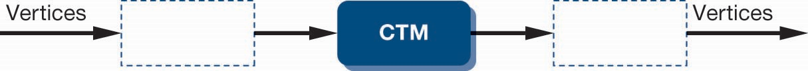
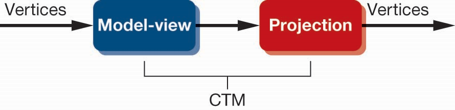

OpenGL3.1版本之前的矩阵，通过状态机控制，有几种不同的类型，包括模型视图矩阵(GL_MODELVIEW)，投影矩阵(GL_PROJECTION)，纹理矩阵(GL_TEXTURE)，颜色矩阵(GL_COLOR)，需要通过操控函数指定当前操作的矩阵，如glMatrixMode(GL_MODELVIEW)
函数操作作为固定管线实现的一部分在CPU上实现，但当前的模型视图、投影矩阵等都自动应用于CPU中的所有顶点，因此这些固定管线的矩阵实现已不再支持
用当前变换矩阵(Current Transformation Matrix, CTM)表示目前应用于着色器环境下的矩阵实现
CTM为$4\times 4$的齐次坐标矩阵，作为状态的一部分，在管线中自动应用于所有顶点，其由用户应用程序定义，以变换单元的形式加载到管线中，即有
CTM可通过载入新的矩阵或后乘操作改变
绕固定点旋转的操作步骤如下:
将上述步骤放一起即有$C=TRT^{-1}$，注意这里矩阵的相乘顺序，需要的是后乘的结果
因为需要的是$C=T^{-1}RT$，因此需要将上述顺序逆转，即有
$$ C\leftarrow I, C\leftarrow CT^{-1}, C\leftarrow CR, C\leftarrow CT$$每个操作对对应于程序中的一个函数，最后一步操作是在程序中是最先执行的
OpenGL管线通过连接一个模型视图矩阵和一个投影矩阵构成CTM
WebGL中，模型视图矩阵实现两项功能
投影矩阵用于定义观察空间，选择相机焦距参数
以三种操作为例，不同的库实现具体细节有所不同，但主要思路是一致的
var m=mat4();
var r=rotate(theta, vx, vy, vz);
m=mult(m, r)
var s=scale(sx, sy, sz);
var t=translate(dx, dy, dz);
m=mult(s,t);
假设绕固定点(1.0, 2.0, 3.0)的Z轴逆时针旋转30度，写出其矩阵
var m=mult(translate(1.0, 2.0, 3.0), rot(30,0, 1.0, 2.0, 3.0));
m=mult(m, translate(-1.0, -2.0, -3.0));
应用程序中可以载入任意矩阵，也可以实现任意矩阵的相乘操作
要注意的是，矩阵可以以$1\times 16$的向量形式存储，可通过函数将其转换为$4\times 4$的矩阵
OpenGL中采用的矩阵是列优先存储，若用户定义矩阵为行优先，可通过函数转置得到列优先矩阵，如flatten函数
在一些应用中，需要保存当前变换矩阵，供后面使用，如场景的层次建模部分，此时需要用矩阵栈保存当前变换矩阵
var stack=[];
stack.push(modelViewMatrix);
modelViewMatrix=stack.pop();